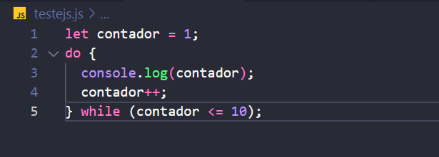
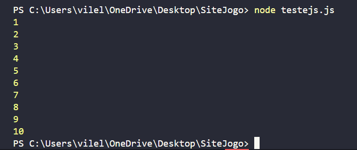
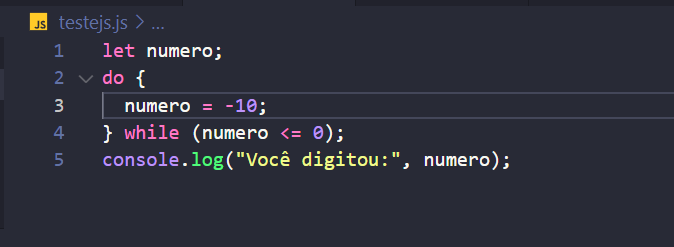
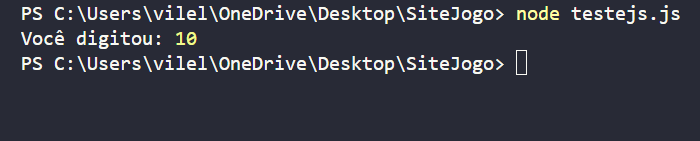
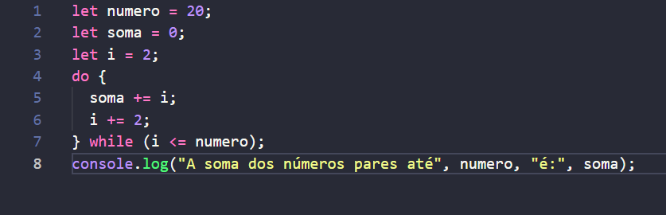
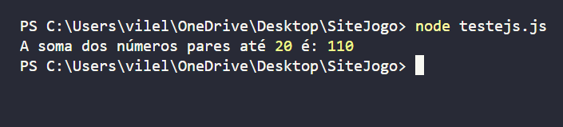
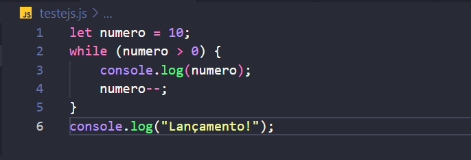
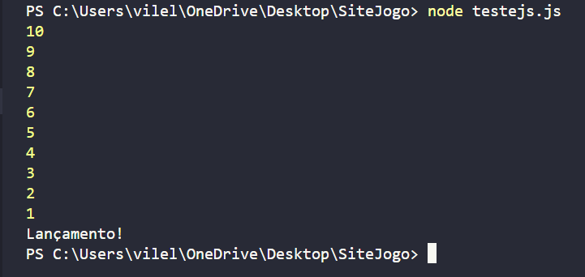
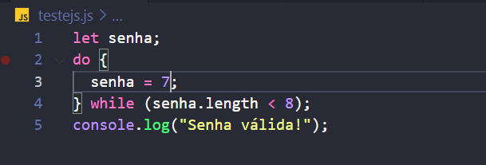
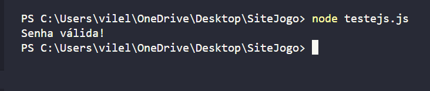

Estrutura de repetição Do While
A estrutura do...while é outra forma de criar loops em programação, e ela possui uma característica
importante: o bloco de código dentro do loop sempre será executado pelo menos uma vez. Isso ocorre
porque a
condição para continuar o loop é verificada após a execução do bloco.
Após a execução do bloco, a condição dentro do enquanto é avaliada e se a condição for verdadeira, o
programa volta ao início do loop para executar o bloco novamente. Além de que, loop continua se repetindo
até que a
condição se torne falsa.
Quando usar:
-
Garantia de execução:
Quando você precisa garantir que um bloco de código seja executado pelo menos uma vez, independentemente da condição inicial. -
Menu interativo:
Para criar menus em que o usuário deve digitar uma opção válida. O loop do...while garante que o menu seja exibido pelo menos uma vez, dando ao usuário a chance de escolher uma opção. -
Validação de dados:
Para solicitar ao usuário que digite um dado válido. O loop do...while continua solicitando o dado até que o usuário forneça um valor válido.
Exemplos da estrutura: Do...While
Exemplo 1:
imprimindo números de 1 a 10Entrada:
 Saida: 
Exemplo 2:
Solicitando um número positivoEntrada:
 Saida: 
Exemplo 3:
Calculando a soma dos números pares até um determinado valorEntrada:
 Saida: 
Exemplo 4:
Criando uma tabuadaEntrada:

Saida: 
Exemplo 5:
Criando uma lista numeradaEntrada:
 Saida: 
Agora é com você!
Mostre que, com o site, você aprendeu a usar a estrutura de repetição FOR, caso tenha alguma dúvida, revise o conteúdo novamente.
Crie um código que conte até um número específico.